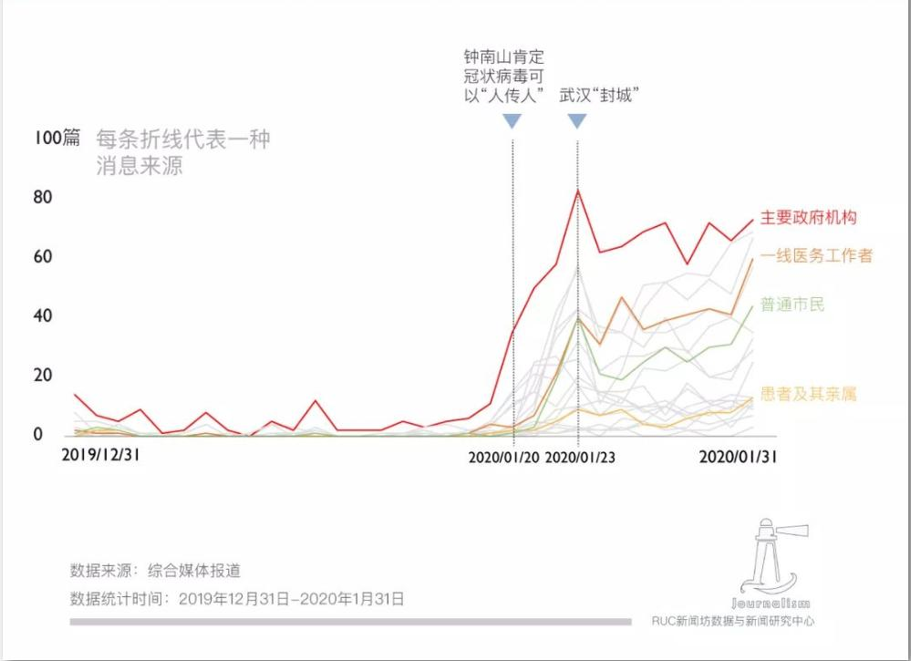

<!DOCTYPE HTML>

<html>
<head>
<meta http-equiv="Content-Type" content="text/html"; charset="utf-8"/>
<title>倒计时</title>
</head>
<body><SCRIPT LANGUAGE="JavaScript">
var maxtime = 30*30
timer = setInterval("CountDown()",1000);
function CountDown(){
    if(maxtime>=0){
        minutes = Math.floor(maxtime/30);
        seconds = Math.floor(maxtime%30);
        msg = "距离考试结束还有"+minutes+"分"+seconds+"秒";
        document.all["timer"].innerHTML=msg;
        --maxtime
    }
    else {
        clearInterval(timer);
        alert("时间到，考试结束！");
    }
}
</SCRIPT>
<div id="timer" style="color:black"></div>
</body>
</html>

<html>
<body bgcolor="#d0d0d0">

<h2 align="center">226篇肺炎报道观察：谁在新闻里发声？</h2> 

<p style="font-size:15px">①最深的恐惧是对未知的恐惧,<u>面对新型冠状病毒这一全然陌生的敌人,阅读新闻,成为一个公民在如此灾难面前,保持知情、消解恐慌、积极防护最简单最有效的办法。</u>这场灾难影响多维复杂,涉及多个专业领域,在撬动事实时,媒体选择让谁发声,成了一个值得研究的问题。RUC新闻坊对2286篇相关报道做了全面的观察、分析,有以下发现:</p>
<p style="font-size:15px">②一、疫情前期媒体发声受限,导致预警滞后。<u>学界普遍认为,健康传播的透明公开能帮助公众正确认知公共卫生事件,遏制谣言或错误信息的流传,避免社会恐慌,建立切实可行的防范机制。</u>官方公开信息不及时、不完善,极易造成媒体对疫情严重性的误判和报道的迟滞,不能起到有效预警。</p>
<p align="center">

<h4 align="center"> 图片1-1 </h4>
</p>
<p style="font-size:15px">③二、“人”在信源中的地位上升。随着疫情的扩散,媒体消息来源更加多元,出现下沉的趋势,“人”的地位受到重视。<u>新京报、中国青年报等多家媒体发布征文,给有切身体会的“风暴中心”的人提供了发声的平台。</u><span style="border-bottom: 4px dotted">他们</span>作为历史的见证者,更主动地参与到内容生产之中,大大丰富了报道的体裁和主题,提供了多元的视角,为历史留下了更为鲜活的底稿。</p>
<p style="font-size:15px">④三、越靠近现场,情感倾向越强烈。在19项编码的消息来源中,记者、一线医务人员、患者及其家属、普通市民、网民、其他公众人物、医疗机构作为信源的稿件与其他信源的稿件相比,因为融入了更多的切身经历,具有更鲜明的情感倾向。</p>
<p style="font-size:15px">⑤四、<u>报道倾向总体呈中性,党媒更偏正面。</u>三类媒体中,党媒的报道更偏正面,从疫情中寻找正能量,对疫情中的做法、成绩进行肯定,是整块抗疫情绪版图中情感色彩最鲜亮的模块。相比之下,市场化媒体和自媒体正面报道比负面报道少。市场类媒体中立报道比例最高,接近90%。自媒体负面倾向的报道接近正面的2倍。说明这两类媒体更多地着力于对疫情中存在的问题的揭示、质疑和反思。……</p>

<p style="font-size:15px;text-indent:30px;">[数据说明]</p>
<p style="font-size:15px;text-indent:30px;">1.为了对比不同性质媒体的报道差异,选取了新华社、人民日报、中国青年报、中国新闻周刊(隶属中新社)、健康报(国家卫健委旗下报纸)5家媒体作为党媒样本,财新、界面新闻、澎湃新闻、三联生活周刊、人物、第一财经6家媒体作为市场化媒体样本,丁香园、八点健闻作为垂直领域权威自媒体样本。(编者注:有专家认为,从广义上看,我国境内所有公开发行的媒体都可以算是党媒,本研究中采用的是狭义的“党媒”概念,即本研究中的“党媒”相对“市场化媒体”偏机关报刊性质,后者对前者偏市场化运营。)</p>
<p style="font-size:15px;text-indent:30px;">2.为了对比湖北当地媒体和其他媒体地区报道的区别,选择了湖北、广东、北京三地做比较,并将长江日报、楚天都市报、广州日报、南方都市报、新京报、北京青年报6家地方级媒体作为分析对象。北京和广东都曾属SARS(严重急性呼吸综合征)疫区,且是目前为止防控疫情扩散压力较大的地区。</p>
<p style="font-size:15px;text-indent:30px;">3.在具体样本选取上,本研究以电子版报纸及官方公众号作为主要样本收集来源,过滤掉直接转载、无信源标注的简单网络信息整合等非原创报道。</p>
<p align="right" style="font-size:15px">(摘编自人大新闻系RUC新闻坊《2286篇肺炎报道观察:谁在新闻里发声?》)</p>


</body>
</html>